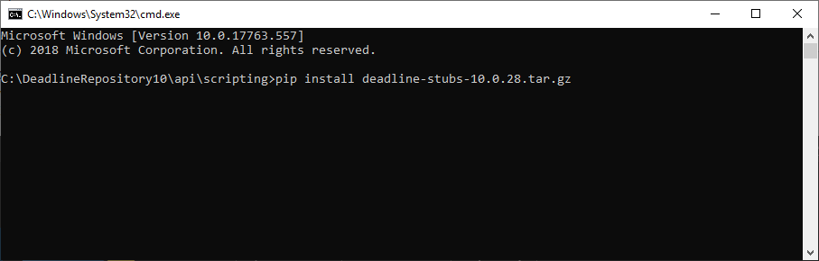

Scripting Overview¶
Overview¶
Scripts can be used to customize various aspects of Deadline, including creating custom plugins, submitting jobs to the farm, or automating specific tasks after a job completes. The scripting language that Deadline uses is Python, which is supported using Python for .NET. In addition to supporting native cPython modules, Python for .NET allows your scripts to make use of the .NET Libraries. This fantastic combination of cPython & .NET allows for the best of both worlds, suiting both seasoned cPython scripters and .NET technology based developers. Studios are free to choose to use either or both technologies to their advantage in further customizing the Deadline compute management framework.
Custom Repository Folder¶
If desired, custom scripts and plugins can be placed in the ‘custom’ folder in the Repository. This folder contains subfolders for different plugins and scripts, allowing you to customize the following areas of Deadline:
Application Plugins ../<DeadlineRepository>/custom/plugins/
Event Plugins ../<DeadlineRepository>/custom/events/
Submission Scripts ../<DeadlineRepository>/custom/scripts/Submission/
General Scripts ../<DeadlineRepository>/custom/scripts/General/
Job Scripts ../<DeadlineRepository>/custom/scripts/Jobs/
Task Scripts ../<DeadlineRepository>/custom/scripts/Tasks/
Worker Scripts ../<DeadlineRepository>/custom/scripts/Slaves/
Pulse Scripts ../<DeadlineRepository>/custom/scripts/Pulse/
Limit Scripts ../<DeadlineRepository>/custom/scripts/Limits/
Job Report Scripts ../<DeadlineRepository>/custom/scripts/JobReports/
Worker Report Scripts ../<DeadlineRepository>/custom/scripts/SlaveReports/
Web Service Scripts ../<DeadlineRepository>/custom/scripts/WebService/
Integrated Submission Scripts ../<DeadlineRepository>/submission/
Note that any scripts or plugins in the ‘custom’ folder will not be affected when upgrading or downgrading the Repository. The Repository installer also creates a backup of the ‘custom’ directory together with the other Deadline directories during the install process to ‘../backup/[timeStamp] and/or [mostRecent]/custom’ directory. In addition, any scripts or plugins in the ‘custom’ folder will override any scripts or plugins that are shipped with Deadline if they share the same name. If you want to check out the scripts and plugins that are shipped with Deadline, you can find then in the ‘events’, ‘plugins’, and ‘scripts’ folders in the Repository.
There is also an option for a job to load its Application Plugin from another location, which can be set in the Job Properties. This can be useful when testing plugins before updating them directly in the Repository.
Scripting Reference¶
The full Deadline Scripting Reference can be found on the Thinkbox Software Documentation Website. Offline PDF and HTML versions can be downloaded from here as well. Ensure you select the correct drop-down version of Deadline to view the matching API to your current Deadline version.
There are also many scripts and plugins that are shipped with Deadline, which you can use as a reference or starting point for your own customization. These scripts can be found in the following folders in the Repository:
../<DeadlineRepository>/events Event Plugins
../<DeadlineRepository>/plugins Application Plugins
../<DeadlineRepository>/scripts Monitor Scripts
Application Submission Scripting Reference¶
Located under the ../<DeadlineRepository>/submission directory in Deadline’s repository are the application specific script files for all the deeply integrated application submitters. Each application directory where applicable has 3 x sub-directories:
Client: The local proxy Client script is stored here, which typically is manually copied over to the local submitting client machine, thereby allowing users to open up the submission UI. These scripts tend not to be modified very often and purely serve as a proxy script, which references/pulls the Main submission script from the Deadline repository, where the actual submission code resides.
Main: The Main script(s) files here are referenced or loaded into application memory, typically by the local proxy Client script. It is in these script file(s) that the deep, submission integration code resides for each application in question. All this code is unprotected and studios are invited to customize if they so choose.
Installers: Each of our applications that have an in-app submitter, on their respective documentation page, there will be instructions on how to manually install the local proxy Client script into the correct directory and any further configuration that may be required to get up and running. As an alternative, we provide Installer(s) which can be run with the correct access permissions, to install the local proxy Client script(s) for you and also carry out any further configuration that may be required. Where applicable, Installers are provided for the different operating systems.
The following in-application deeply integrated submitters are available for reference or as a starting point for your own custom submitter:
3ds Command ../<DeadlineRepository>/submission/3dsCmd/
3ds Max ../<DeadlineRepository>/submission/3dsmax/
Corona Distributed Rendering ../<DeadlineRepository>/submission/3dsmaxCoronaDR/
RPManager Script Setup ../<DeadlineRepository>/submission/3dsmaxRPM/
3ds Max ../<DeadlineRepository>/submission/3dsmaxVRayDBR/
After Effects ../<DeadlineRepository>/submission/AfterEffects/
AutoCAD ../<DeadlineRepository>/submission/AutoCAD/
Blender ../<DeadlineRepository>/submission/Blender/
Cinema 4D ../<DeadlineRepository>/submission/Cinema4D/
Clarisse iFX ../<DeadlineRepository>/submission/Clarisse/
Clarisse BUiLDER ../<DeadlineRepository>/submission/ClarisseBUiLDER/
Composite ../<DeadlineRepository>/submission/Composite/
Draft ../<DeadlineRepository>/submission/Draft/
FTrack ../<DeadlineRepository>/submission/FTrack/
Fusion ../<DeadlineRepository>/submission/Fusion/
Generation ../<DeadlineRepository>/submission/Generation/
Guerilla ../<DeadlineRepository>/submission/Guerilla/
Harmony ../<DeadlineRepository>/submission/Harmony/
Hiero ../<DeadlineRepository>/submission/Hiero/
Houdini ../<DeadlineRepository>/submission/Houdini/
HServer ../<DeadlineRepository>/submission/HServer/
Jigsaw ../<DeadlineRepository>/submission/Jigsaw/
Katana ../<DeadlineRepository>/submission/Katana/
Lightwave ../<DeadlineRepository>/submission/Lightwave/
Maya ../<DeadlineRepository>/submission/Maya/
Maya ../<DeadlineRepository>/submission/MayaVRayDBR/
Messiah ../<DeadlineRepository>/submission/Messiah/
MicroStation ../<DeadlineRepository>/submission/MicroStation/
Mocha Pro ../<DeadlineRepository>/submission/Mocha/
modo ../<DeadlineRepository>/submission/Modo/
Interactive Distributed Rendering ../<DeadlineRepository>/submission/ModoDBR/
Nuke ../<DeadlineRepository>/submission/Nuke/
Realflow ../<DeadlineRepository>/submission/RealFlow/
Rhino ../<DeadlineRepository>/submission/Rhino/
SketchUp ../<DeadlineRepository>/submission/SketchUp/
Softimage ../<DeadlineRepository>/submission/Softimage/
Softimage ../<DeadlineRepository>/submission/SoftimageVRayDBR/
VRED ../<DeadlineRepository>/submission/VRED/
Running Scripts from the Command Line¶
To run scripts from the command line, the only requirement is that you define a __main__ function. This is the function called by the Command application when it executes the script.
def __main__(*args):
# Replace "pass" with code
pass
If you save this script to a file called myscript.py, you can execute it using this command:
deadlinecommand -ExecuteScript "myscript.py"
If you are running the script in a headless environment where there is no display, you should use this command again:
deadlinecommand -ExecuteScriptNoGui "myscript.py"
The only difference between these commands is that ExecuteScriptNoGui doesn’t pre-import any of the user interface modules so that it can run in a headless environment. If your script doesn’t use any user interface modules, then you can use ExecuteScriptNoGui regardless of whether or not you’re in a headless environment.
Code Completion for the Deadline Scripting API¶
To enable code completion for the Deadline Scripting API, ensure you have both Python 3.10 and pip installed on your machine. You can download the most recent version of Python 3.10 (which comes prepackaged with pip) here.
Next, open a command prompt (Windows) or console (macOS/Linux) and run “pip install” on the deadline-stubs-*.tar.gz source file located in ../<DeadlineRepository>/api/scripting/.
This will install the deadline-stubs python package into your Python environment, which can be leveraged by various Python IDEs to provide code completion, type hinting, and doc popups.
VS Code Setup¶
- To enable Python code completion in VS Code you will need to:
Download and install the newest version of VS Code .
Install the Python extension for VS Code (File > Preferences > Extensions).
Press ctrl + shift + p and a menu will open up in VS Code, select the ‘Python: Select Interpreter’ option. Select the same interpreter that you used to pip install the deadline-stubs-*.tar.gz file.
Uncheck the Python: Jedi Enabled setting (File > Preferences > Settings).
Check the Parameter Hints: Enabled setting (File > Preferences > Settings).
You will now have code completion and documentation pop-ups when working in Python scripts that import Deadline. Press ctrl + space for a list of auto complete suggestions that are available to you.
PyCharm Setup¶
- To enable Python code completion, type hinting, and doc popups in PyCharm you will need to:
Download and install the newest version of PyCharm.
Select the interpreter that you used to pip install the deadline-stubs-*.tar.gz file. (File > Settings > Project > Project Interpreter)
In the Pycharm Code Completion Settings (File > Settings > Editor > General > Code Completion) ensure you have ‘Smart Type Completion’ and ‘Show the Documentation popup in X ms’ selected.
You will now have code completion, type hinting, and doc pop-ups when working in Python scripts that import Deadline. Press ctrl + space for a list of auto complete suggestions that are available to you.
Migrating Scripts From Deadline 5¶
Some changes were made to the Scripting API in Deadline 6, which means that Deadline 6 and later are NOT backward compatible with scripts written for Deadline 5.
One change that affects all Deadline scripts is that the globally defined Deadline functions are no longer available. However, many have functional replacements, which are mentioned below.
For migration tips for specific scripts, see the appropriate documentation:
Deadline Repository Path Functions¶
Original Global Function |
Replacement Function |
|---|---|
GetJobsDirectory() |
There is no replacement for this function because most job information is now stored in the Database. If you want to get the auxiliary folder for a job, use RepositoryUtils.GetJobAuxiliaryPath(job), which takes an instance of a job as a parameter. |
GetJobDropDirectory() |
There is no replacement for this function because drop jobs have been removed. |
GetLimitGroupsDirectory() |
There is no replacement for this function because Limit information is now stored in the Database. |
GetPluginsDirectory() |
RepositoryUtils.GetPluginsDirectory() |
GetPulseDirectory() |
There is no replacement for this function because Pulse information is now stored in the Database. |
GetRootDirectory() |
RepositoryUtils.GetRootDirectory() |
GetScriptsDirectory() |
RepositoryUtils.GetScriptsDirectory() |
GetSettingsDirectory() |
RepositoryUtils.GetSettingsDirectory() |
GetSlavesDirectory() |
There is no replacement for this function because Worker information is now stored in the Database. |
GetSubmissionDirectory() |
There is no replacement for this function. |
GetTempDirectory() |
There is no replacement for this function because there is no longer a temp folder in the Repository. |
GetTrashDirectory() |
There is no replacement for this function because there is no longer a trash folder in the Repository. |
GetUsersDirectory() |
There is no replacement for this function because User information is now stored in the Database. |
Deadline Client Path Functions¶
Original Global Function |
Replacement Function |
|---|---|
GetDeadlineBinPath() |
ClientUtils.GetBinDirectory() |
GetDeadlineHomeCurrentUserPath() |
ClientUtils.GetCurrentUserHomeDirectory() |
GetDeadlineHomePath() |
ClientUtils.GetUsersHomeDirectory() |
GetDeadlineSettingsPath() |
ClientUtils.GetUsersSettingsDirectory() |
GetDeadlineTempPath() |
ClientUtils.GetDeadlineTempPath() |
GetLocalApplicationDataPath() |
PathUtils.GetLocalApplicationDataPath() |
GetSystemTempPath() |
PathUtils.GetSystemTempPath() |
General Process Functions¶
Original Global Function |
Replacement Function |
|---|---|
IsProcessRunning(processName) |
ProcessUtils.IsProcessRunning(name) |
KillAllProcesses(processName) |
ProcessUtils.KillProcesses(name) |
KillParentAndChildProcesses(processName) |
ProcessUtils.KillParentAndChildProcesses(name) |
WaitForProcessToStart(processName, timeoutSeconds) |
ProcessUtils.WaitForProcessToStart(name, timeoutMilliseconds) |
File/Path/Directory Functions¶
Original Global Function |
Replacement Function |
|---|---|
AddToPath(semicolonSeparatedList) |
DirectoryUtils.AddToPath(directory) |
ChangeFilename(path, filename) |
PathUtils.ChangeFilename(path, filename) |
FileExists(filename) |
FileUtils.FileExists(filename) |
GetExecutableVersion(filename) |
FileUtils.GetExecutableVersion(filename) |
GetFileSize(filename) |
FileUtils.GetFileSize(filename) |
GetIniFileKeys(iniFilename, section) |
FileUtils.GetIniFileKeys(fileName, section) |
GetIniFileSections(iniFilename) |
FileUtils.GetIniFileSections(fileName) |
GetIniFileSetting(iniFilename, section, key, default) |
FileUtils.GetIniFileSetting(fileName, section, key, defaultValue) |
Is64BitDllOrExe(filename) |
FileUtils.Is64BitDllOrExe(filename) |
SearchDirectoryList(semicolonSeparatedList) |
DirectoryUtils.SearchDirectoryList(directoryList) |
SearchFileList(semicolonSeparatedList) |
FileUtils.SearchFileList(fileList) |
SearchFileListFor32Bit(semicolonSeparatedList) |
FileUtils.SearchFileListFor32Bit(fileList) |
SearchFileListFor64Bit(semicolonSeparatedList) |
FileUtils.SearchFileListFor64Bit(fileList) |
SearchPath(filename) |
DirectoryUtils.SearchPath(filename) |
SetIniFileSetting(iniFilename, section, key, value) |
FileUtils.SetIniFileSetting(filename , section, key, value) |
SynchronizeDirectories(srcPath, destPath, deepCopy) |
DirectoryUtils.SynchronizeDirectories(sourceDirectory, destDirectory,deepCopy) |
ToShortPathName(filename) |
PathUtils.ToShortPathName(path) |
Miscellaneous Functions¶
Original Global Function |
Replacement Function |
|---|---|
BlankIfEitherIsBlank(str1, str2) |
StringUtils.BlankIfEitherIsBlank(str1, str2) |
ExecuteScript(scriptFilename, arguments) |
ClientUtils.ExecuteScript(scriptFilename, arguments) |
Sleep(milliseconds) |
SystemUtils.Sleep(milliseconds) |
OS Functions¶
Original Global Function |
Replacement Function |
|---|---|
GetAvailableRam() |
SystemUtils.GetAvailableRam() |
GetApplicationPath(filename) |
PathUtils.GetApplicationPath(applicationName) |
GetCpuCount() |
SystemUtils.GetCpuCount() |
GetRegistryKeyValue(keyName, valueName, defaultValue) |
SystemUtils.GetRegistryKeyValue(keyName, valueName, defaultValue) |
GetTotalRam() |
SystemUtils.GetTotalRam() |
GetUsedRam() |
SystemUtils.GetUsedRam() |
Is64Bit() |
SystemUtils.Is64Bit() |
IsRunningOnLinux() |
SystemUtils.IsRunningOnLinux() |
IsRunningOnMac() |
SystemUtils.IsRunningOnMac() |
IsRunningOnWindows() |
SystemUtils.IsRunningOnWindows() |

{kind=link}
{kind=link}
{kind=link}
{kind=link}
{kind=link}
{kind=link}
{kind=link}